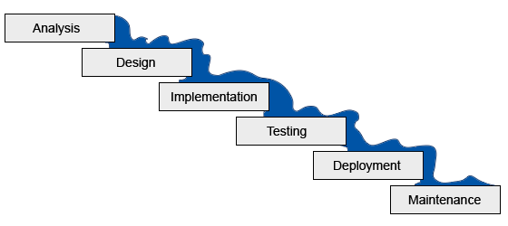
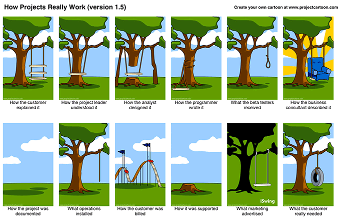

The Waterfall Process is often blamed for failed Software Projects.
The process of developing a new computer system was often lengthy and expensive and they often suffered from delays, budget overruns and complete failure due to cancellations or because the finished system didn't deliver what was expected. In time, the cause of many of the failures was seen to be the process itself.
Waterfall consists of a series of stages that are completed sequentially with each stage producing outputs that became the input to the next. The initial System Analysis and Design used various prescriptive techniques to produce a specification for a team of programmers to implement in code which when complete would be tested, deployed and then maintained.
Can you spot the problem? Yes - water flows downhill! It wasn't easy for later stages to provide input or valuable feedback into previous ones. Although there was typically some overlap the specialists responsible for a given stage were often moved on to their next project once their stage was completed.
The cost of making a change increased dramatically as the consequences of any decision fed through to the other stages. If testing uncovered an incorrect requirement it meant revisiting the Analysis, Design and Implementation stages again - extra communication, effort and frequently negotiations.
If a system failed was it because the requirements were wrong? Or the design was faulty? Or maybe it was coded badly? Or not tested well enough? Or operations screwed up? Companies and teams resorted to detailed contracts and excessive documentation to avoid the risk of being 'blamed' for their contribution.
Because the process was lengthy and expensive and it wasn't easy to go back to a previous step there was a tendency to over-specify systems. Instead of asking for just what was required, people felt they needed to make the best of their one opportunity to request everything they could conceivably think of and this further compounded issues by making systems way more complex than was really necessary.
Even if everything was done perfectly, the systems often took so long to be completed that what was finally delivered was often the system that the company needed 2 years ago when the requirements were first identified but which no longer completely suited their needs.
The waterfall approach simply didn't allow companies to react quickly enough to changing business conditions because the lead-time for delivering a system was so long and the outcome variable.
These system failures were so common that cartoons were created to satirise the issues which were well known for some time.
The basic premise of Agile is to maximize value - focus on the things that increase productivity and remove impediments.
Agile was conceived as a lightweight alternative to the established heavyweight Project Management methodologies that had been proven to be ineffective when applied to software development.
Based on the experiences of successful and productive teams and new software development practices such as Test Driven Development it was focused on removing unproductive activities and enabling skilled people to focus their efforts on what they did best.
Instead of approaching a computer system like an engineering construction (such as building a house) where the complete foundation is built first before the next layer is added, people recognized that software was different and much more pliable. Good software development techniques meant that code didn't need to be seen as static but should evolve as a system was developed. Now, all that needed to be built was just what was needed for the next feature.
The rigid and inflexible database schemas of Relational Database Management Systems (RDBMS) or 'SQL' were often viewed as the foundation for any new system.
Agile software development has contributed to the increased adoption of NoSQL database technologies such as MongoDB which promote flexibility and remove some of the need for lengthy up-front schema design work.
Agile was an enabler to allow teams to focus on delivering working features to the customer, often within the first weeks of a project and ongoing throughout it's lifecycle. This provided immediate feedback and allowed quick changes when necessary as the customer could both see visible progress and provide better direction for future work.
Despite the large expenditure of effort and cost, the system doesn't provide usable features until it is complete.
Features are usable as soon as they are completed delivering immediate value with much less overall effort.
The minimum amount of effort is required to create a "Minumum Viable Product (MVP) which finally allowed companies to try out ideas and react quickly. An iterative process is used to build the software incrementally with each increment being a working, usable version progressing toward the final goal.
Instead of work being handed from team to team of separate specialists an Agile team is cross-functional with all of the skills necessary to analyze, architect, design, build, test and deploy the solution.
However, while there are some recognized practices the Agile approach itself was not prescriptive and there were many flavors and variations. The core values and principles were enshrined in the Agile Manifesto.
The Agile Manifesto is based on a set of core values and principles.
The Agile Manifesto was the result of the leading proponents of various Agile approaches coming together and combining their ideas into a set of core values and principles for practitioners to follow.
We are uncovering better ways of developing software by doing it and helping others do it. Through this work we have come to value:
That is, while there is value in the items on the right, we value the items on the left more.
Some claim agile does away with planning, contracts and documentation which it clearly doesn't. It simply places more value on things such as working software and collaboration as these are more likely to directly contribute to a successful outcome.
We follow these principles:
The Agile Alliance was formed by many of the Agile Manifesto's authors to further promote and formalize the Agile approach.
Scrum gained the most traction and became synonymous with Agile.
Over time a variety of different approaches developed all based on the core values and principles of Agile. These included:
Scrum became the most widely known and recognized and gave birth to new titles within development teams such as 'Scrum Master'.
As recognition of Scrum as an approach to developing software grew there was an increasing need for more formal Scrum Master Certifications to identify those with the genuine skills and real experience who could introduce and champion it within a organization looking to adopt Agile.